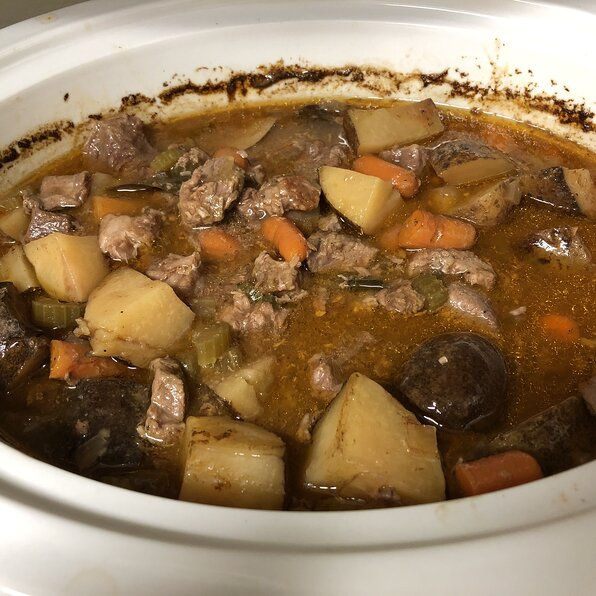

Slow Cooker Beef Stew I

A tasty and good beef recipe
A hearty, savory slow cooker stew with potatoes, carrots, celery, broth, herbs and spices. You won't be slow to say 'yum'!
Ingredients
- 2 pounds beef stew meat, cut into 1-inch pieces
- ¼ cup all-purpose flour
- ½ teaspoon salt
- ½ teaspoon ground black pepper
- 1 clove garlic, minced
- 1 bay leaf
- 1 teaspoon paprika
- 1 teaspoon Worcestershire sauce
- 1 onion, chopped
- 1 ½ cups beef broth
- 3 potatoes, diced
- 4 carrots, sliced
- 1 stalk celery, chopped
Steps
- Place meat in slow cooker. In a small bowl mix together the flour, salt, and pepper; pour over meat, and stir to coat meat with flour mixture. Stir in the garlic, bay leaf, paprika, Worcestershire sauce, onion, beef broth, potatoes, carrots, and celery.
- Cover, and cook on Low setting for 10 to 12 hours, or on High setting for 4 to 6 hours.